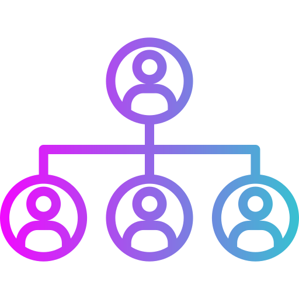
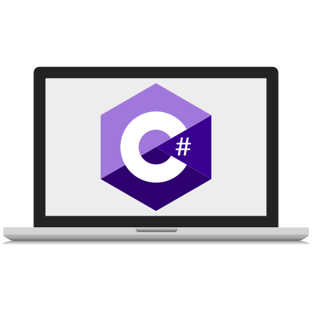

Hello, I'm Asfiya 👋
About Me
I am Asfiya Shaikh, a second-year Bachelor of Computer Applications (BCA) student at Kristu Jayanti College with a strong foundation in software development, cybersecurity, and data analytics. I am driven by a deep interest in building practical, impactful solutions using modern technologies.
I have earned multiple certifications from leading institutions including Microsoft, Infosys Springboard, Tata Forage, MathWorks, and Itronix Solutions. My technical toolkit includes proficiency in Python, Java, .NET, C programming, HTML, CSS, and MySQL, as well as experience with cybersecurity principles, data visualization, and network fundamentals. In addition to technical expertise, I possess strong communication and leadership skills, demonstrated through experiences in public speaking, team collaboration, and technical documentation. I take pride in effectively translating complex technical ideas into clear, actionable outcomes — whether in group projects, presentations, or report writing. I am passionate about continuous learning and aspire to pursue postgraduate education in the field of computer science or cybersecurity. My long-term goal is to contribute meaningfully to the tech industry through innovative and ethical technological development.
Technical Skills
HTML
CSS
Python
Java
MYSQL

Data Structures
.NET

C Programming
Soft Skills
- Public Speaking
- Presentation
- Documentation
- Report Writing
- Leadership
Experience
Web Development Intern
VaultofCodes | April 2025 – Present
Currently working on designing and developing responsive web pages using HTML and CSS.
Projects
Portfolio Website
Personal website showcasing my profile and work.
Expense Tracker
App to log and visualize expenses.
ConstructSync
Construction management app for progress tracking.
Resume
View or download my resume here.
Contact Me
Email: shaikhasfiya705@gmail.com
LinkedIn: linkedin.com/in/asfiya-shaikh